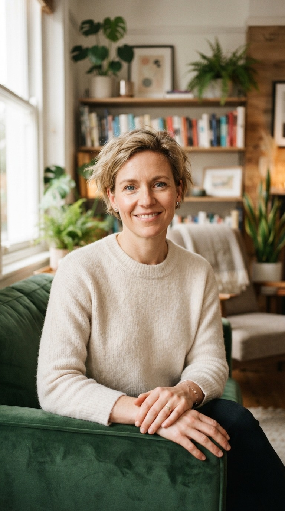

01
General & urgent care
Everyday health, made simpler.
Online care Real conversations. Clear next steps.
Your life, our starting point

Life doesn’t pause when you need care. We make it easier to speak to a doctor, understand your options, and get back to being you. A conversation that fits your life, wherever it finds you.
Explore your optionsA place to start.
A clearer way forward.
Everyday health, made simpler.

Space to talk. Support to move forward.
Keep the next step in reach.
A more focused conversation.
Example prices are confirmed per country before launch.
No surprises. No rush.
A real conversation.
At a time that works for you.
Pay per visit.
No subscription.
Choose a service and a registered clinician. Check the language, availability, and price before you book.
Join your consultation by secure video. Talk through your questions, your history, and what matters to you.
Your consultation summary and any issued documents stay in your account. Revisit the advice and your next steps.
Experienced. Qualified. Here for you.
General & family care
Space for a conversation

A more focused perspective
Portraits illustrate the care experience.
The Carevia approach
A conversation with space for your questions, your concerns, and what matters most to you.
Frequently asked questions
Adults aged 18 and over can create an account. Parents and legal guardians can add children and other dependants and book on their behalf. You need to be in a supported country at the time of your visit.
Availability depends on your country, the service you choose, and the clinician’s registration. Check the available options for your country before booking.
Your doctor can issue prescriptions, certificates and referrals when clinically appropriate. They will decide what is suitable after assessing you during the consultation.
No. Carevia’s model is pay per consultation. You see the price before confirming. Prices shown on this page are examples and will be confirmed per country before launch.
You can rebook for free if the video connection fails. Contact Carevia support through the main website for help arranging another consultation.
Your written summary and any issued documents appear in your account. You can review what was discussed, find the next steps, and explore follow-up options.